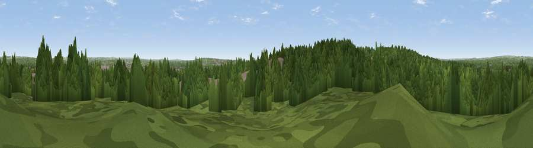

Viewpoint near Chilworth
#41763 in England · top 74% of its area beats it · near ChilworthThe view, rendered

A 360° render of this exact spot computed from the terrain model, tree cover and land cover — summer colours, afternoon light, calibrated against photographs of famous viewpoints. Real trees, hedges and buildings will differ in detail.
The panorama
Grey silhouette: terrain skyline in each direction (720 bearings, Earth curvature and refraction included). Dashed green: skyline with trees (+15 m) and buildings (+8 m) as obstacles. Blue strip: how far the ground is visible on each bearing.
Where the view opens
Wedge length = distance to the farthest visible ground on that bearing (vegetation-aware). Rings at 10, 25 and 50 km.
What fills the view
71% woodland · 17% built-up · 10% grassland · 1% cropland
Angular shares of the visible panorama (visual magnitude), not map area. Landscape diversity 0.37 (0–1 Shannon).
Key numbers
More beautiful places nearby
The staircase of upgrades: each row has a higher view potential than everything closer. Driving times are estimates from straight-line distance, calibrated against real road routing — check an actual route before setting out.
| Place | Direction | Drive | Score |
|---|---|---|---|
| Hut Hill | SW · 1 km | ~2 min | 32.9 |
| Viewpoint near Chilworth | W · 2 km | ~5 min | 40.3 |
| Viewpoint near Upton | W · 5 km | ~10 min | 46.3 |
| Viewpoint near Compton | NNE · 9 km | ~17 min | 47.1 |
| Violet Hill | N · 9 km | ~18 min | 55.7 |
| Viewpoint near Sparsholt | NNW · 11 km | ~21 min | 66.9 |
| Beacon Hill | ENE · 18 km | ~31 min | 71.7 |
| Viewpoint near Meonstoke | E · 21 km | ~36 min | 74.8 |
50.96277, -1.39299 · source: screening · position refined by local search. Computed location — check access rights before visiting.